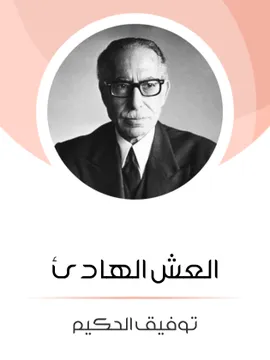

العش الهادئ: من وحي الحياة الفنية

قراءة عربية أصلية محددة النطاق في الصفحات 7، 8 من ملف PDF المرتبط، وليست تلخيصا كاملا للكتاب. نناقش ما تدعمه هذه المقاطع فقط.
كابينة على البحر وأوراق ممزقة
يفتتح الحكيم نصه الفني بصورة هادئة في ظاهرها: شرفة كابينة بمقاعد مريحة ووسائد ملونة وراديو صغير، وتحت قدمي المؤلف كوم من الأوراق الممزقة. حوله يلف بيومي أبو النجف كأنه خادم أمين لطقس الإبداع: الكابينة تحت أمرك، الراديو عندك، الثلاجة وأدوات القهوة في الداخل، وقد نبهت على كل إنسان أن يتركك وحدك.
زاوية وحدود القراءة
هذه قراءة في المشهد الأول من الصفحتين 7 و8، فلا نعرف بعد طبيعة علاقة المؤلف بصاحب الكابينة ولا ما يكتبه فكري. نقرأ أجواء الحياة الفنية على المصيف بوصفها عالم النص المصري في زمانه، ولا نقيس بها أوضاع الكتّاب اليوم.
الطبعة والقراءة
هذه النسخة من الكتاب صادرة ومتاحة مجانًا بموجب اتفاق قانوني بين مؤسسة هنداوي وأسرة السيد الأستاذ توفيق الحكيم.
تنزيل PDF المجاني ↓ القراءة والمصدر الرسمي ↗